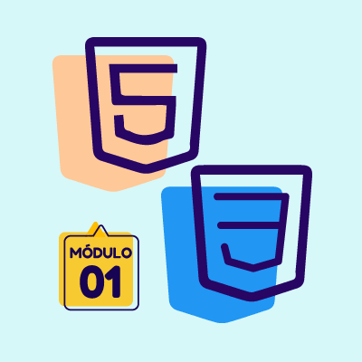
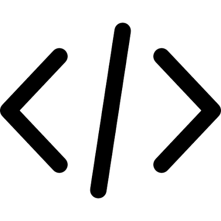

Módulo 01 — Curso em Vídeo (Prof. Gustavo Guanabara)
Neste módulo, aprendi os fundamentos da construção de sites, estruturação de textos e marcação semântica com HTML5.
Mini Projeto do Módulo 01
Acesse abaixo o resultado prático desenvolvido nesta etapa:

Ver Projeto do Módulo 01
Abordado nesta etapa:
- Primeiros passos no desenvolvimento web: Visão geral e comandos básicos.
- Configurando o ambiente de desenvolvimento: Extensões, ferramentas e atalhos.
- Primeiros códigos em HTML5: Estruturação da página e escrita dos primeiros elementos textuais.
- Formatação correta de textos: O uso correto de tags para formatação.
- Listagem de itens: Aprendendo diferentes tipos de listas.
- Links e âncoras: Uso de links e âncoras.
- Trabalhando com imagens, áudio e vídeo: Como inserir e manipular mídias nos projetos.
- Introdução ao CSS3: Primeiros passos para dar estilo e cor aos elementos criados.
Código-fonte do projeto
GitHub
[←Voltar ]
caso queira ver todos os conteúdos do modulo 01 clique aqui